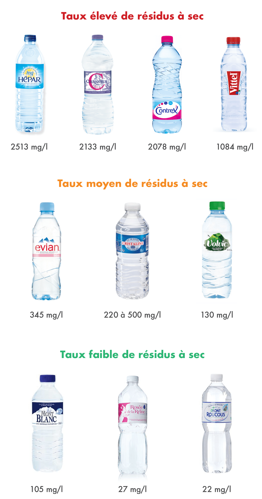
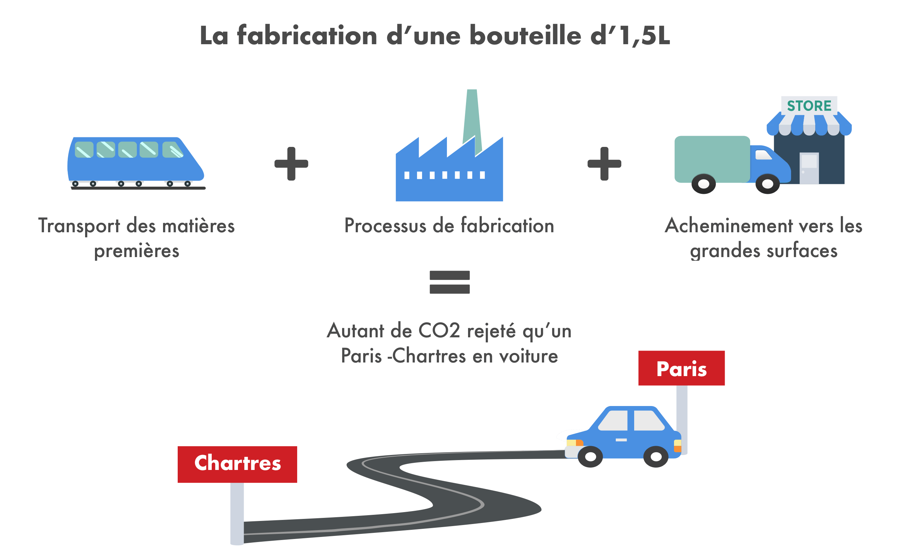

L’eau constitue environ 60% du corps humain. On comprend alors aisément pourquoi il est recommandé de boire 1,5 à 2 litres d’eau par jour, soit environ 600 litres par an. Entre l’eau minérale, l’eau gazeuse, l’eau de source et l’eau du robinet, on a l’embarras du choix pour s’hydrater ! Mais toutes les eaux ne se valent pas. Voici donc un éclairage sur le sujet, rédigé avec l’aide du nutritionniste Anthony Berthou.
Peut-on avoir confiance en l’eau du robinet ?
En France, l’eau du robinet est de bonne qualité. Bien qu’elle soit très contrôlée, elle suscite pourtant la méfiance. Sa potabilité est évaluée par plus de 60 critères, établis par l’OMS et calculés par rapport aux populations les plus vulnérables (nourrissons, femmes enceintes). Ces critères régulent notamment la teneur en minéraux, qui ne doit pas être trop élevée. L’eau est d’abord captée dans la nature, puis traitée, stockée, consommée, nettoyée et enfin renvoyée dans la nature.

Aujourd’hui, les stations de traitement de l’eau se sont multipliées et la pollution par les nitrates et les pesticides devient très rare. Concernant le plomb, l’eau distribuée en contient très peu. Seules les canalisations des bâtiments anciens et non rénovés peuvent encore être en plomb. Dans ce cas, après une période sans utilisation, l’eau stagnante peut se charger en plomb. Il est donc recommandé de laisser couler un instant l’eau du robinet avant de la consommer.
En fonction des régions, l’eau du robinet est plus ou moins chlorée afin de détruire les bactéries qui peuvent s’y trouver. Consommé en excès, le chlore favorise l’acidité du corps. Mais, sa quantité dans l’eau est très faible et ne représente pas une raison fondée d’éviter l’eau du robinet. De la même manière, si le calcaire donne un goût désagréable à l’eau, il est en revanche sans danger sur la santé.
Certains mettent en cause la présence de résidus de médicaments dans l’eau. À ce jour, aucune étude scientifique n’a prouvé leur présence significative, ce qui ne signifie toutefois pas qu’ils soient totalement absents.
Les carafes filtrantes sont-elles vraiment utiles ?
En France, la confiance en l’eau du robinet reste très relative. Des systèmes de filtrages sont alors adoptés dans le but d’obtenir une eau d’encore meilleure qualité malgré les nombreux contrôles déjà effectués. Mais selon l’Agence Nationale de Sécurité Sanitaire (ANSES), l’efficacité de ces carafes est contestable. Les cartouches de filtration se révèlent ainsi être des nids à microbes et les carafes filtrantes contribuent alors à la propagation de microbes dans l’eau.
L’eau du robinet est le produit alimentaire le plus contrôlé en France, sa consommation est donc sans danger pour 95,6% des consommateurs. Cependant, encore 4% de la population française reçoit une eau non conforme, essentiellement dans les régions d’agriculture intensive, et dans les petites communes rurales. Les régions les plus concernées sont le Loiret, la Seine-et-Marne, l’Yonne, l’Aube, la Marne, le Pas-de-Calais et la Somme. Pour connaître la qualité de l’eau de son lieu d’habitation, vous pouvez vous rendre sur la page dédiée du gouvernement pour vérifier.
Comment choisir son eau en bouteille ?
Les eaux en bouteille sont naturellement potables, et ne subissent aucun traitement. Il existe deux types d’eau en bouteille :
- Les eaux de source : Elles proviennent de nappes d’eau souterraines situées dans toutes les régions de France, et sont soumises à la même réglementation que l’eau du robinet. Elles doivent remplir tous les critères de potabilité et contiennent donc à peu près autant de minéraux que l’eau du robinet. Elles ne subissent aucun traitement, ces eaux sont ainsi plus pures que celle du robinet, même si la différence reste très faible.
- Les eaux minérales : Leur origine est souterraine, tout comme l’eau de source. Par contre, elles sont soumises à des normes spécifiques et peuvent atteindre des fortes teneurs en minéraux qui ne sont pas tolérées pour l’eau du robinet.
Le premier élément à prendre en compte dans le choix d’une bouteille d’eau est la quantité de résidus à sec qu’elle contient. Il s’agit de la quantité de minéraux (sodium, magnésium, sulfate, calcium,…) restants une fois que l’eau est évaporée. Contrairement à ce que l’on pourrait penser, une bonne eau est une eau peu minéralisée. Une consommation excessive de minéraux peut être néfaste pour l’organisme. La présence de minéraux en grande quantité dans l’eau peut interagir avec ceux apportés par l’alimentation, réduisant l’assimilation de ceux-ci. Le résidu à sec doit ainsi être idéalement inférieur à 100mg/l. Il est identifiable après les valeurs nutritionnelles de la bouteille par les mentions : “résidus à sec à 180°”, “extrait sec à 180°”, “teneur total en sels minéraux à 180°.
De manière générale, les eaux minérales doivent donc être consommées de façon limitée. Elles sont souvent trop riches en sodium et autres minéraux. Certaines seraient refusées en réseau public de distribution à cause de leur trop fort taux en minéraux. L’argument souvent mis en avant par ces eaux est que la présence de minéraux permet de réduire certaines carences, notamment en calcium et en magnésium. Or, l’assimilation du calcium et du magnésium de ces eaux est faible. Ainsi, ces eaux ne présentent que peu d’intérêt particulier et ne doivent pas faire l’objet d’une consommation quotidienne. Lorsque l’on est carencé, l’eau minérale n’est pas une solution : les déficits en magnésium ou en calcium ne peuvent pas être restaurés avec de l’eau, ils doivent être restaurés à travers une meilleure alimentation.
En revanche, les eaux de source contiennent nettement moins de minéraux et peuvent convenir pour une utilisation au quotidien. Elles sont intéressantes en remplacement de l’eau du robinet, quand celle-ci possède un goût de chlore trop prononcé par exemple ou dans les régions rurales polluées.

Le deuxième élément à considérer est le pH de l’eau. L’estomac est un milieu très acide, et la consommation d’une eau trop basique (à l’opposé de l’acidité) peut perturber la digestion gastrique. Le pH de l’eau doit donc être neutre à légèrement acide (compris entre 6,5 et 7). Sur l’étiquette, l’indication du pH se trouve après celle des résidus à sec.
Des particules de plastiques dans l’eau en bouteille ?
L’eau en bouteille de nombreuses marques est contaminée par de minuscules particules de plastique qui se détachent et migrent dans l’eau. Le risque de transfert des particules vers les aliments est d’autant plus élevé avec la chaleur et la lumière, qui contribuent à la dégradation du plastique (voir notre article sur les emballages).
Pour le moment, les dangers sur notre santé sont encore méconnus et des études approfondies sont nécessaires pour savoir si l’on doit réellement s’inquiéter de leur présence.
L’eau gazeuse est-elle intéressante ?
L’eau gazeuse peut être consommée en petite quantité lors de gros repas où l’acidité de notre estomac devient très élevée, ou pour les personnes qui souffrent d’acidité gastrique. En effet, elle favorise la digestion car le bicarbonate contenu dans l’eau contribue à la neutralisation de l’acidité produite lors de la digestion et régule le pH d’un estomac trop acide. Néanmoins, elle est à éviter en cas de ballonnement car elle libère du gaz dans le tube digestif.
Par ailleurs, le bicarbonate est utile aux sportifs pour diminuer l’acidité qui a été produite en quantité par les muscles pendant un effort. Cette acidité, appelé acide lactique, est à l’origine de courbatures et de douleurs musculaires. Suite à un effort, la consommation d’eau gazeuse va alors permettre de réduire plus rapidement la fatigue musculaire, en régulant l’acidité tissulaire, et ainsi accélérer la récupération.
Les eaux gazeuses peuvent être consommées de temps temps mais ne doivent pas composer l’apport majeur d’eau pour le corps car elles sont chargées en minéraux. Dans les deux cas précédent, il vaut mieux privilégier une consommation occasionnelle d’eau gazeuse la moins minéralisée possible et riche en bicarbonates de sodium (>600mg/l).
Et l’environnement dans tout ça ?
La production d’eau en bouteille est un processus extrêmement énergivore. Entre le transport des matières premières, le processus de fabrication, et l’acheminement vers les grandes surfaces, c’est un bilan de 8kg de CO2 rejetés par litre d’eau. C’est à dire autant qu’une voiture qui roule 80 km, pour une seule bouteille d’1,5L.
Par ailleurs, une fois bues, les bouteilles finissent soit en décharge, en incinérateurs, en centre de recyclage, ou dans la nature. La décharge et l’incinération sont des options posant problème car elles libèrent des toxines dans le sol que nous cultivons et dans l’air que nous respirons.

L’eau du robinet bénéficie la plupart du temps d’un système de distribution beaucoup plus rentable et moins énergivore que pour l’eau en bouteille.
Finalement, que faire ?
- Pour votre consommation quotidienne, privilégiez l’eau du robinet, peu chère, de qualité et respectueuse de l’environnement.
- Si son goût ne vous plait pas ou si vous êtes dans une région à risque, préférez une eau de source très faiblement minéralisée avec un taux de résidus à sec inférieur à 100mg/l et un pH situé entre 6,5 et 7 (Mont-Roucous, Montcalm, Rosée de la Reine).
- Evitez les eaux minérales. Si vous êtes carencés, ne voyez pas l’eau minérale comme la solution et essayez de combler vos carences à travers une alimentation plus adaptée.
- Suite à un effort ou un repas copieux, vous pouvez boire un verre d’eau gazeuse riche en bicarbonate pour diminuer l’acidité du corps (Vichy Célestins, Vichy ST Yorre, Rozana, Quézac, Badoit).
Pour approfondir le sujet, vous pouvez consulter l’article d’Anthony Berthou sur l’eau et la récupération du sportif : http://www.sante-et-nutrition.com/hydratation-effort/

Merveilleux, enfin des informations éthiques et pratiques. Merci
Attention quand même à l’eau du robinet …https://eaukey.com/index.php/2018/08/27/boire-eau-du-robinet/
Bravo et merci pour ce beau travail de synthèse qui nous est à tous très utile !
Je suis insuffisante rénale, donç merci pour cette étude de l’eau très intéressante…
Cette article a été très enrichissant ! Merci beaucoup.
Merci pour cet article très intéressant et très instructif, il y a des choses que je savais déjà et d’autres que je viens d’apprendre.
Je vous dis à la prochaine fois j’espère.
Très grand merci pour cet article sur l’eau, ce bien si précieux que nous devons absolument préserver si nous voulons continuer à l’apprécier.
Très bon article, intéressant .
Je viens juste de lire votre article sur l eau moi j ai un forage l eau est extra de temps en temps je la fait analyser pour savoir si elle est toujours potable je la préfère aux eaux en bouteille Merci car j ai appris beaucoup sur les eaux en bouteille
Bon commentaire précieux pour notre Santé. Manque la carte de France des meilleures eaux, je parle de votre cité a tous mes amis et connaissances. 10 a 11 additifs dans une glace carte d or, de quoi se poser quelques questions.
Ayanr des problèmes importants d’acidité gastrique,je bois de l’eau de source Fiée des lois Intermarché avec un PH de 7 et un taux de bicarbonate élevé..(360)
Quant aux eaux gaseuses elles ont aussi des inconvénients..j’ai eu une crise très aigue de psoriasis avec de l’eau de Vichy Célestins qui contient du lithium..qui favorise le psoriasis..
Merci pour ces informations très utiles : Il faut reconnaitre que l’eau du robinet s’est nettement améliorée depuis quelques années.
Bravo pour votre article.
Toxicité des dérivés chlorés: Les dérivés chlorés sont des cancérigènes avérés dans la classification du CIRC de l’OMS. Les cancers les plus fréquemment associés aux THMs dans l’eau de boisson sont les cancers de la vessie, du rectum et du colon.
Meci pour ces informations indispensables et malheureusement souvent niées par les campagnes de pub…
Merci pour votre site ! Je suis fan … je suis devenue carrèment blomyddicte !
Bravo et merci pour ces informations
Très bon documentaire.
L’eau est vitale pour notre santé.
Il y a des régions de france où l’eau est très douce et d’autres très calcaire.Ces régions ne sont pas détaillées et c’est juste une information qui aurait pu être notifiée.
Merci de toute la bonne volonté de votre équipe pour nous aider dans nos choix qui touche à notre santé.
Article très intéressant !
Merci
Merci pour l’article. Je suis contente que vous ayez mentionné les résidus à sec car on en parle peu.
Et encore félicitations pour votre site qui est très utile et me guide dans mes achats.
bonjour
l’eau du robinet dépasse les normes de sécurité (nous sommes entourés de colza) mais reste consommables,qu’en pensez-vous ? d’autre pat le chocolat a un faible indice glycémique mais contient pas mal de graisses saturées, es ce un bon produit, merci pour votre site qui est très bien fait
cordialement
Mme pilon
Les critères d’une eau potable sont pas aussi nombreux ( voir votre facture d’eau) et même que ces quelques critères ne sont pas toujours respectés… Il faut aussi savoir que la radioactivité n’est pas un critère, pourtant …Avez vous vu le film « du poison dans l’eau du robinet » ?https://www.youtube.com/watch?v=RbGg65WXh7M
Bonjour,
Article interessant auquel il manque un sujet à mon avis : Qu’en est-il de l’eau adoucie ? on entend tout et son contraire concernant la consommation d’eau traitée par un adoucisseur. avez vous des informations fiables sur le sujet ?
Merci d’avance.
Marc MARTIN.
Article très clair.
Bilan co2 d une bouteille d eau impressionnant!
INTÉRESSANT!
Je vais pouvoir choisir l’eau avec plus de discernement grâce à cet article.
Merci…
Très bon article, merci.
Cela va à l’encontre des idées reçues que j’avais sur l’eau minérale. Très intéressant d’ajouter le bilan carbone.
Très important et constructif
Merci
EXCELLENT.
Je vais réviser ma façon de faire et mieux choisir mon eau.
très bonne information merci
Très bon article, utile et simple. Merci !
Merci pour toutes ces bonnes informations
oui, merci pour cet article qui actualise nos connaissances et nous évite des erreurs. Bon travail car rapide et facile à lire et à mémoriser.
Merci pour vos articles ,on doit connaître tout cela ,mais c’est très utile de se les rappeler régulièrement
10/10 pour votre application ,
il est toujours très intéressant de lire vos articles ainsi que certains commentaires
un veuf qui découvre tout
Super interessent j’ai decouvert comment choisir mon eau en bouteille
merci Yuca
Retification : Evian 520mg/L et non 345 comme annoncé.
Enfin un article sensé et exact ! Dans le milieu de la nutrition nous le savons mais jamais un article pour dénoncer ces eaux minérales inutiles. Oui, l’eau du robinet est bonne pour notre corps car contrôlée pour un apport équilibré qui tient compte de notre santé. Bravo Blomy
Bonjour Isabelle.Vous semblez être très confiante dans l’eau du robinet. Et pourtant…https://eaukey.com/index.php/2018/08/27/boire-eau-du-robinet/
Très bien
merci pour c infos, ça me confirme dans ma consommation d’eau du robinet avec moins de pollution et aussi pas de port de charge lourde toute les semaines….
Merci pour cet article très clair. Petite question? Peux-t-on boire de l’eau adoucit?
Merci.
document très interressant merci
Bonsoir,
Quels sont les effets de l’eau gazeuse, faite maison, dans notre corps ? ?
(Une eau du robinet + SodaStream)
Bonjour,
Et merci pour cet article complet et très intéressant sur les eaux.
Que dire des eaux du robinet que l’on gazeifie a la maion ( type sodastream)
Que contiennent en fait ces recharges de gaz? Sont elles conseillées, inoffensives ou à proscrire?
Merci par avance
connase
merci pour cette analyse décalée de ce qu’on entend d’habitude. Les producteurs d’eau en bouteille ne vont pas forcément apprécier … nous allons rerouter l’article à notre réseau d’amis.
merci pour votre bon travail et … poursuivez-le.
Dominique et Denis
Excellent rapport
Merci pour ces précieuses informations.
Merci pour cet article intéressante. Néanmoins une question persiste : Quelle est le bilan des perturbateurs endocriniennes dû aux particules plastiques? Les bouteilles sont souvent en plastiques et les tuyaux de distribution d’eau aussi .
Pourquoi ne pas produire son eau tout simplement .https://eaukey.com/
Parceque ç est un processus très énergievore et qu il est temps de sortir du nucléaire et aussi parceque glisser sa pub intempestivement est déontologiquement douteux et super désagréable pour les lecteurs
Bonjour Laurent, je ne suis pas sur que cela soit énergivore.En occident et aussi dans d’autres régions du monde l’énergie électrique est gaspillée. Chauffage ou climatisation à fond,éclairage des enseignes ,appareils électriques souvent mal utilisés voire inutiles.Ceci pour l’électricité.Pour le pétrole il suffit d’imaginer ces milliers de voitures dans les bouchons pour voir comment on gaspille cette énergie.La distillation c’est environ 13cts d’électricité par litre.Pas de production de plastique, pas de transport, pas d’usine , juste une évaporation de l’eau à température optimale.Maintenant chacun fera le bilan qu’il souhaite mais sauf à vivre reclus dans la montagne nous consommons tous de l’énergie.A chacun de l’utiliser au mieux.
Merci pour ces informations utiles que je relaierai.
Votre dessin du coût de fabrication d’une bouteille en plastique est trop parlant.
Merci de nous alerter
Merci pour cet article et partage votre avis sur l’addition carbone des bouteilles plastiques y compris sur l’inadéquation des apports des eau môérales.
Depuis notte tendre enfance mon épouse et nos enfants buvons de l’eau du robinet mais il est vrai que les différentes communes où nous avons habité avait une eau parfaite et nos tuyauteries aussi.
Par contre nous adorons l’eau gazeuse et depuis plus de 5 ans transformons notre eau du robinet en eau de seltz. Que du bonheur tout en conservant la qualité de l’eau de base le tout sans se casser les reins pour le transport des bouteilles plastiques.
Bravo pour la qualité de votre article.
Il est clair comme de l’eau de source….
Bonjour
Comme déjà écrit : on ne trouve que ce que l’on cherche. Alors quid des résultats d’analyse ? Des Eaux du robinet ou celles en bouteille.
Dans les 2 cas il s’agit d’Eaux MORTES.
Or nous sommes vivants et devons boire de l’eau VIVANTE.
Voir les interviews de Marcel VIOLET ou Jeanne ROUSSEAU par exemple sur YouTube.
Pascal ,un légumes cueilli depuis plusieurs heures perd une grande partie de ses vitamines .Lorsque vous mangez de la viande, me semble t il elle est morte. Pour l’eau, l’essentiel est qu’elle ne soit pas polluée et qu’elle soit la plus pure possible.L’eau n’est pas un aliment mais un élément comme l’air.
Un sujet intéressant avec des commentaires qui le sont aussi. Merci blomy.
Merci pour cet article. Je voudrais rajouter certains points:
* Concernant les résidus médicamenteux, on n’en parle pas parce que ca couterai trop cher au niveau du pays tout entier de rajouter encore d’autres tests, sans compter que de toute facon ca couterait trop cher de modifier tous les filtres de toutes les centrales d’epurations de France pour filter les médicaments. Du coup, c’est plus facile de dire qu’on n’a rien prouvé.
* Concernant la qualité de l’eau du robinet, il y a sur le terrain de grosses differences entre la théorie et la pratique. Dans n’importe quelle ville qui possède des immeubles ou batisses qui commencent un peu a dater, il suffit de regarder l’état des tuyaux de plomberie rouillés (oui, de la rouille) qui acheminent l’eau pour effectivement n’acheter que de l’eau en bouteille. Du coup, meme si l’eau de ville est effectivement clean jusqu’a arriver dans votre batiment, , elle ne l’est plus forcément dans votre robinet.
De le meme manière qu’il y a un diagnostique de dépendance energetique obligatoire quand on achete un bien, ce serait bien d’avoir aussi un diagnostique de qualité de l’eau du robinet du bien qu’on achete. Il faudrait le rajouter dans la loi
Trop de lois ! Rien ne vous empêche de demander un diagnostic avant une acquisition.
Avec les problèmes de calculs rénaux j’ai du me questionner sur mon alimentation et mes boissons.L’eau du robinet est bannie trop de calcaire sans parler des produits chimiques qu’il y a dedans. Moins il y a des produits dans l’eau et mieux mes reins me le disent.
Encore des communes où l’eau ne doit pas être consommée.Dormez tranquillement braves gens, et faites nous confiance, on s’occupe de tout ….https://france3-regions.francetvinfo.fr/grand-est/mesures-restrictions-usage-eau-goersdorf-froeschwiller-woerth-1530924.html
Merci pour cet article très instructif ! 🙂
Pourriez-vous compléter cet article par l’étude des moyens de filtration domestique de l’eau du robinet de façon à supprimer les résidus médicamenteux et autre micro particules?
Tres bien mais il faudrait aussi parler du prix pour lenconsommateur. 1 litre d eau en bouteille, en gros 1 €. 1m3, donc 1000 litres, 5€ Plus ou moins selon les régions. Donc de très loin beaucoup plus cher
Salut Bill, tu évalues à combien d’euros ton capital santé ? Bien s’alimenter ça commence aussi par boire une eau non polluée, non ?
Bonjour Teddy, vous voulez dire boire une eau pure ou une eau en bouteille ? https://eaukey.com/
Article intéressant et objectif.
Article complet et très intéressant qui n’oublie de soulever le problème des résidus médicamenteux.
merci pour cet article, je continue donc à boire l’eau du robinet ! je réserve l’eau de source en bouteilles pour mes déplacements…
Merci pour l’article. C’est vraiment intéressant.
Très intéressant. Après des années a boire de l’eau en bouteille, j’ai décidé de revenir a l’eau du robinet. Mais qu’en est il de l’eau (du robinet) qui coule au travers d’un frigo (frigo »américain » avec filtre) ?
Merci
Bonne continuation.
Travaillant dans une centrale de la grande distribution je suis complètement d’accord sur le paragraphe coût de transport et écologie. Je suis dans une commune de la Loire Atlantique malheureusement l’agriculture est très présente et j’ai consulté un site qui m’a indiqué que le taux de nitrates n’était pas super. Donc je consomme de l’eau en bouteille mais je vérifie la provenance inutile de traverser la France quand on peut s’approvisionner à côté. C’est notre façon de consommer mieux.
Les nitrates sont présents dans l’eau du robinet en région parisienne aussi.Mais il n’y a pas que cela malheureusement.Et l’eau en bouteille n’est pas terrible non plus avec ces micro-particules de plastique dans l’eau.Les bouteilles sont stockées n’importe comment et c’est la cata surtout les eaux transportées par voie ferré où elles restent souvent plusieurs jours dans les wagons à les températures sont souvent à plus de 40 degré.Car une grande quantité des eaux genre Evian Vichy Contrex partent du lieu de production par train.
Merci de cet article très intéressant-
Très intéressant cet article, je culpabilisatais à faire boire de l eau du robinet à mes petits enfants, cet article m a permis complément réconforter
Merci
Bonjour,
Si l’eau du robinet est déconseillé aux femmes enceintes et aux bébés ,à votre avis pour quelles raisons ?
Non elle n’est pas déconseillée par les services maternités où j’ai accouché ! Même pour les nouveaux -nés, ils me conseillaient l’eau du robinet
J’habite la.partie Nord des Hautes Alpes, où l’eau est excellente, et où l!agriculture n’a aucun impact sur les nappes phréatiques. Pourtant, un.nombre important de personnes achètent de l’eau en bouteille. c’est déprimant !
Après moult recherches, pour arriver à une entente parfaite avec mon corps et l’eau qui reste un des éléments principaux du corps. Les eaux minérales ne sont pas bonnes pour la santé. Elles créent des problèmes articulaires en déposant des minéraux là où il faudrait les enlever. Donc a la base il vaut mieux choisir Une eau déminéralisée. Car le travail de l’eau n’est pas d’apporter quelque chose, mais d’enlever, de déplacer les minéraux et les minerais comme elle fait naturellement dans la nature. Eh oui! Je tiens à signaler que je ne représente aucune marque de distillateur d’eau. Mais je conseil vraiment cette pratique qui j’en suis sûr, conviendra a tous ceux qui ont des problèmes articulaires. Bien sûr il faut aussi supprimer de son alimentation les produits laitiers.
Santé et forme a tous. Merci Julie pour tes recherches, mais parfois il faut savoir sortir des rangs, entre eau du robinet au fluor, et bouteilles plastiques polluantes, j’ai choisi eau de source distillé, mais cela fonctionne aussi avec l’eau du robinet, car la distillation filtre carrément toutes les substances, et l’on ne voie, que de l’ H2o
Bonjour, je confirme ce que vous avez dit Pascal-Emmanuel, l’eau doit être la plus pure possible.Les minéraux dans l’eau ne sont pas assimilables par notre organisme.De plus, notre eau aujourd’hui est fortement polluée tant par les produits rejetés par les industries, que par les traitements qu’elle subit pour arriver au robinet.La distillation était utilisée jadis par les marins.Aujourd’hui c’est le moyen le plus efficace pour avoir une eau disponible facilement chez soi.Cordialement.https://eaukey.com/
Bonjour,
Quid de l’eau du robinet gazéifiée à la maison?
Qui a écrit cet article ?
Nous achetons Volvic depuis que nous avons fait installer un adoucisseur ?
Merci pour ces renseignements clairs et précis. Enfin je sais quoi faire maintenant. Merci à toute l’équipe blomy
Article très instructif ! depuis la naissance de nos petits enfants nous nous sommes mis comme eux à la Montroucous qui a une certaine douceur au palais ! Grâce à vous j’en comprends les bienfaits ….. merci
Merci pour la qualité de cet article très utile.
Une astuce supplémentaire pour purifier l’eau du robinet du chlore et autre, la carafe en argile brute laissée au réfrigérateur…
Bonjour
Pour l odeur et le goût désagréable… je suis d accord… mais attention tous les traitements subis par l eau du robinet la rende … certe potable au regard des autorités…. mais oxydante à un niveau très élevé.
L oxydation de nos tissus est un véritable fléau … en effet Ç est s assurer un vieillissement prématuré, une destruction de la membrane cellulaire et une inflammation accrue … et ça personne n en parle !
Bonjour
Pour l odeur et le goût désagréable… je suis d accord… mais attention tous les traitements subis par l eau du robinet la rende … certe potable au regard des autorités…. mais oxydante à un niveau très élevé.
L oxydation de nos tissus est un véritable fléau … en effet Ç est s assurer un vieillissement prématuré, une destruction de la membrane cellulaire et une inflammation accrue … et ça personne n en parle !
Merci pour cet article très intéressant. Je ne doutais pas que l’eau du robinet est meilleure
Je suis adepte de l’eau du robinet. je suis actuellement enceinte et je suis bien sur POUR donner de l’eau du robinet pour le biberon de bebe. Mon entourage me montre du doigt comme si j’avais tord et que je voulais du mal a mon futur bebe. Alors eau du robinet ou eau en bouteille pour bebe?
Je répondrai ni l un, ni l autre …
En effet toutes ces eaux sont acidifiantes et oxydantes pour l organisme …
Complètement d’accord. Vive l’eau du robinet.
Pour supprimer le goût de chlore laissez reposer quelques minutes dans un recipient ouvert.
Bonjour Mathilde. Le chlore et ses dévirés sont des produits cancérigènes. Si vous tapez « eau potable et cancer » dans un moteur de recherche vous trouverez des informations pas très sympathiques .Cordialement.https://eaukey.com/
merci pour votre article très intéressant et complet, je pense que je vais changer mes habitudes.
Bonjour
J’aurais voulu savoir les effets
De l’injection de gaz dans l’eau
Du robinet
Merci
Bonjour
Ç est tres simple … le gaz la rend acidifiante et oxydante… c est à dire un fléau pour notre métabolisme!
Deja que naturellement aucune eau (robinet ou bouteille) n’est alcaline et antioxydante…
Cordialement
Isabelle
http://isabelle.ipages.me/performance/
Bonjour,
Que faut il penser des appareils qui gazeifient l’eau du robinet avec des recherges de CO2 ? Merci
Un grand BRAVO à votre équipe pour votre Application et vos dossiers qui ne nous veulent que du bien.
blomy est devenue indispensable pour notre santé et notre bien-être!
Une telle Application, claire, indépendante, sérieuse et vaste, nous l’avons rêvée, et vous l’avez fait!
MERCI infiniment.
Longue vie à blomy!
Bravo pour cette article. Moi qui croyait que seul l eau mineral etait bonne. Article tres instructif☺
Merci pour cet article très intéressant.
Pourriez vous répondre à une question ,j’utilise un adoucisseur,en effet l’eau de ma région est très calcaire. Peux t’on boire de l’eau qui sort de l’adoucisseur….. sans rsique.
Merci d’avance
Je suis moi aussi intéressée par une réponse à cette question…. Merci de l avoir posée. J espère une réponse 😊
Bonjour Patrick
L eau adoucît n est pas une eau de boisson …
D ailleurs il y a obligation de laisser un point d eau dure … et bizarrement les installateurs oublient cela ou indiquent qu ils ont laissé le tuyau d arrosage en point d eau dure …
Pourquoi n est elle pas saine ? Car chargée en ions sodium et très peu chargée en ions calcium et magnésium…
Mais je sais … personne n en parle !
Souvent on pense à protéger ses canalisations et sa machine à laver … et personne ne parle des effets pour la santé !
Cordialement
Isabelle
http://isabelle.ipages.me/performance/
Bon !!! j’ai tout faux .Quand je pense que je bois deux litres d’eau d’ Hépar depuis au moins dix ans en étant convaincue que mon transit , mes apports en magnésium et mes infections urinaires récidivantes tireront bénéfice de ses vertus . J’abandonne et je me dirige vers mon robinet .Mon porte -monnaie sera content……..et je n’irai pas plus mal .A suivre…..J’utilise Blomy pour tous mes achats alimentaires mais je n’ai jamais pensé scanner mes bouteilles d’eau .Merci à vous
Bonjour Evelyne !
J adore l appli Blomy… cependant elle ne vous donnera pas les infos liées au minéraux ni mêmes aux polluants…
Quant aux minéraux contenus dans l’eau en bouteille Ç est purement mensonger (c est du marketing Ç est tout !!!).
En effet pour lutter contre les infections urinaires il vous faut une eau qui soit capable d hydrater à 100% (l eau en bouteilles et l eau du robinet hydraté à maximum 30%).. et leur minéraux ne sont pas assimilables par l organisme car toutes ces eaux sont des eaux qui sont stagnantes…
Comme le signale Blomy, notre corps est composé en moyenne de 60% à 75% … il fait donc sens de se poser les bonnes questions…
Ç est Justement cette question que je me suis posée il y a déjà presque 10 ans !
Cordialement
Isabelle
Bonjour Isabelle,
Vous m’avez l’air pointue sur la question !
Mais pourriez-vous aller encore plus loin en ne vous contentant pas de dire que l’eau en bouteilles et l’eau du robinet n’hydratent au maximum que à 30% alors que pour lutter contre les infections urinaires il faudrait une hydratation à 100%.
Quelle eau hydrate 100% ?
Merci pour votre réponse ! 😉
Step
Super article sur l’eau 👍👍 , moi qui consomme de la contrex tout les jours je pense que je vais changer mes habitudes
Buvant de l’eau Cristalline régulièrement, j’ai été surprise par le taux de résidus à sec indiqué dans votre article. Je viens de le vérifier : il est inférieur à 30 mg/l…
Je viens de vérifier sur une bouteille d’1,5L de Cristaline, il est précisé un Extrait sec à 180°: 421 mg/l et un PH de 7,3.
Votre article n’est pas assez clair sur ce sujet :
» Le résidu à sec doit ainsi être idéalement inférieur à 100mg/l. Il est identifiable après les valeurs nutritionnelles de la bouteille par les mentions : “résidus à sec à 180°”, “extrait sec à 180°”, “teneur total en sels minéraux à 180°. »
Comment faire la conversion des ml/L en ° ?
Bon article sur l eau👍👍👍
Bonjour,
Cristalline utilise plusieurs sources. Il est donc normal de voir cette valeur varier selon les régions
Cdlt
Très très bon article. Il remet en question ma façon de boire « de l’eau bien sur » 😉
Pas trop long et suffisamment clair pour être compris par tous.
Félicitations
Merci pour cet article très intéressant.
Bel article intéressant et instructif!
Article intéressant et instructif. Il remet en question les notions de carences à combler avec l’eau, et il rassure sur l’eau du robinet. Merci !
Bonjour, avez vous vu le film » du poison dans l’eau du robinet » ? Cordialement.https://eaukey.com/
Merci pour cet article très intéressant. Que pensez vous de la possibilité d’ajouter du gaz à l’eau du robinet, par l’intermédiaire d’une machine style sodastream ?
Très intéressant notamment en ce qui concerne l’information sur les taux de résidus à sec.
Merci beaucoup
Très intéressant
Merci pour cette analyse très instructive
bonjour merci pour vous conseille .gros bisous 😘
Très instructif
Merci pour tout ces renseignements. Bravo à toute l’équipe.
Article très intéressant. Merci encore
Bonjour, merci pour votre article très clair.
Auriez vous des informations complémentaires concernant l’eau à apporter aux nourrissons. …en effet, je vais bientôt arrêter d’allaiter mon bébé de 7 mois et je pensais lui donner de l’eau Mont Roucous comme pour ma première fille ( faible taux de résidus à sec). Mais peut on lui donner également l’eau dun robinet? Merci d’avance !
Bonjour, je me pose également la question de l’eau en bouteille destinée aux nourrissons. Votre article est très intéressant mais a jeter le doute sur cette « vérité ». Avez vous un conseil pour les jeunes parents inquiets 😉 ?! Merci
Je vais regarder tout cela. Merci
J’ai lu avec intérêt votre article ,mais comment se fait il que vous ne parliez pas de la teneur en nitrates qui semble tout aussi inquiétant
Intéressant
Article sur l’ea Très intéressant. Merci
J’aime vous lire
Vos articles sont d’excellente qualité , j’aime vous lire
bien fait et juste
Bonjour
Pourriez vous rétablir le dysfonctionnement suivant:je ne reçois plus ni vos infos ni le programme auquel j’ai souscrit(59Euros)
Merci et cordialement
Article très intéressant qui me conforte dans mes convictions !
Bonjour
Mon frère reçoit régulièrement des infos qu’il me transmet mais avant je les recevais directement et en plus j’avais souscrit à un programme (59euros) et je n’écris reçois rien
Merci de rétablir les choses
Bien à vous
Edwige Aubé
Floriane Vidal & Julie de Blomy, thanks for the article post.Really thank you! Great.
Bonjour
Je m’étonne car je ne reçois plus vos informations et je n’ai plus non plus le programme que j’ai acheté 59 euros je crois
Pouvez vous corriger ce problème ?
Merci et bien à vous
Excellent article. Qu’en est-il par contre de l’utilisation de l’eau filtrée par adoucisseur??
Merci beaucoup pour votre réponse.
Très intéressant! merci
merci pour les bonnes infos que vous nous avez donné
très bon article mais pourquoi conseille t’on aux femmes enceintes de ne pas boire l’eau du robinet
L’eau du robinet peut contenir en autre de l’atrazine, un herbicide très dangereux pour les bébés. Mais l’eau du robinet contient de nombreux polluants, dont des pesticides, des résidus médicamenteux mais aussi peut contenir du fluor de l’aluminium du chlore -et ces dérivés très cancérigènes- enfin des tas de produits qui ne faudrait pas ingurgiter. Ces produits chimiques peuvent provoquer des malformations chez l’enfant, d’où la précaution d’usage de déconseiller aux femmes enceintes et aux enfants en bas âge. Mais si cette eau n’est pas bonnes pour eux, par quel miracle deviendrait-elle bonne pour les adultes? La prudence est mère de sureté. Un procédé simple peut la rendre pure, renseignez vous.https://eaukey.com/
Bonjour, très bon article, je bois de l’eau du robinet depuis ma naissance ainsi que toute ma famille…mais pas facile de convaincre les autres!!
Merci à l’équipe de YUCA pour votre application, c’est très éloquent…
Merci pour votre article sur l eau ,perso je ne bois que l eau du robinet mais que je gaze avc sodastream ,je bois bcp plus d eau du coup ,on raconte que ce n est pas très bon pour la santé …qu en pense votre nutritionniste ?
sujet très intéressant qui va m’aider à modifier mon hygiène en terme de consommation d’eau. Je vais délaisser les eaux en bouteille en faveur de l’eau du robinet. Merci pour ces précieux conseils.
Bonjour. Pour les bouteilles d’eau mise au réfrigérateur fermer avec le bouchon « OU PAS » .
Remarquable article, clair, simple, qui donne des critères facilement mémorisables pour faire les bons choix!
En tout état de cause les bouteilles plastiques stagnent sous le soleil à 38 degrés , en dehors du supermarché !!! Vu de mes yeux vu ….mise en rayon elles sont chaudes ….😱…..
je me sers de votre appli chaque jour .en ce qui concerne cet article ,je le trouve interessant,et j’en prend acte,et je n’ai pas peu de noter mon nom
Ce sujet est très intéressant dans la mesure où il traite d’un sujet de santé publique. Pour autant, vous n’abordez pas dans votre thème les adoucisseurs d’eau comme Culligan et autres. Que pensez-vous de ces options qui permettent de limiter notamment le calcaire et les métaux lourds présents dans l’eau de consommation
Bonjour
C’est votre article le plus nul de l’année.
Attention par l’intermédiaire du nutritionniste qui a fait l’article, vous désinformez vos lecteurs.
mais votre application est bien ….
Le commentaire anonyme sur l’article le plus nul de l’année est sponsorisé par les sociétés d’eau minérale ?
Je le trouve super au contraire. Arrêtons de polluer la planète avec des bouteilles en plastique et cessons de nous laisser berner par tous les marketeurs qui n’ont pour objectif que de vendre leurs produits.
Pouvez-vous étayer votre argumentation pour nous éclairer ? Merci.
Merci pour cet article très intéressant !
Vous évoquez les qualités chimiques de l’eau mais les données physiques peu développées sont tout aussi importantes. PH, Ro2 , amperage d’une eau vive ( brassée, courante, dynamisée) et non stagnante ( bouteilles) la rende plus mouillante au niveau cellulaire entre autre.
Merci cordialement Olivier v
Bonjour
Pour avoir travaillé 33 ans dans la distribution d’eau potable il faut se méfier de certaine eau soit disant minérale . Certaine entreprise prennent de l’eau du réseau d’eau de ville pour vous vendre une eau de source ainsi que des eau gazeuse. Ce que que je suis sur sur l’origine de l’eau Cristalline elle provient bien d’une source (sans pub car vous pouvez visiter la production sur rendez-vous). Pour les autres ? les bulles , on peut les rajouter comme on veut.
très instructif. merci
très instructif ont vous fait confiance restez toujours impartial ne vous faites pas manipulés dans ce monde ou tout s’achète surtout les hommes
Après la lecture de cet article je constate que je ne bois uniquement des eaux avec un taux élevé de résidus à sec. Je vais donc modifier ma consommation d’eau. Merci
Un sujet important et non négligeable a été écarté !!le sel d aluminium utilisé pour rendre l eau du robinet clair et limpide beaucoup de centre de traitement l utilise encore ! Très toxique pour les neurones! Voir les derniers études !!!!!
l’article est très intéressant : Merci
Et si on boit de l’eau distille? Est-ce qu’il y a des avantages?
Oui ! les avantages sont nombreux. Finie la pollution par le plastique mais cela n’est pas l’essentiel. L’eau pure nettoie le corps. Nos reins sont beaucoup moins sollicités car ils sont nos filtres.Préservons les. Il n’y a plus aucun polluant. Ensuite si vous souhaitez la minéralisée, très facile.Un thé fait à partir d’une eau distillée se minéralise au contact de ce thé, tout comme le café.Faire la cuisine avec une eau distillée évite d’ajouter dans notre alimentation des produits dont on se serait bien passés ! https://eaukey.com/
Article intéressant à faire suivre
pourquoi ne parlez vous pas de la salvetat tres pauvre en sodium recommandée par tous les nephrologues pour ceus qui ont des pb renaux ?
DE TOUTE FACON VERITE AUJOURD HUI VA S AVERER COMME LE RESTE ERREUR DANS QUELQUES ANNEES…..
Article très intéressant et juste
Merci pour cet article, par contre, vous ne parlez pas des résidus antibiotiques de l’eau de robinet qui peut avoir un effet environnemental et de santé publique beaucoup plus important que les risques liés à l’eau en bouteille.
Lisez attentivement, c’est mentionné
Article très intéressant. Bien construit et très utile. Merci
Jai UN adoucisseur d’eau chez mon Et On m’a conseillé de ne pas boire l’eau du robinet … Comment se situe telle par rapport à toutes ces eaux Merci d’avance pour vos réponses
L’eau d’un adoucisseur est chargée des sels de l’adoucisseur.Il vaut mieux ne pas la consommer.Si vous distillez votre eau elle sera bonne à boire.Cout de l’opération : environ 11 à 15 cts par litre, pour une eau pure sans produire de déchets.https://eaukey.com/
Merci beaucoup pour ces informations qui complètes ce que je savais déjà.
Je vais de suite faire passer le message à certaines de mon entourage.
Encore merci
L’une des eaux qui ont un taux faible de résidus à sec est Mont Blanc ou Montcalm ?
Merci beaucoup très intéressant. Notre santé n a pas de pris il faut tous faire pour garder notre santé surtout avec ces industriel qui nous tu avec leur produit mortel merci encore
Merci pour tout ces renseignements
Maintenant je suis élucidé !
Un riche état des lieux fort intéressant.
Un commentaire sur les déchets plastiques générés bien opportun. Si on parle aussi du contenant; pourquoi ne pas revenir aux bouteilles en verre consignées qui ne sont plus si « has been » que cela …. projets en ce sens ???
Pour ma part, eaau du robinet, mise au réfrigérateur dans des bouteilles en verre (plus de goût de chlore et pas de résidus de plastiques,
Bonjour
Un grand mer ci pour ces informations qui nous aide car que choisir….. bonne jrnee
Bonjour,
Erreur sur la quantité de résidus à sec pour la Vittel. Je viens de regarder sur une bouteille => 400mg/L
Très intéressant votre article. Merci
Super intéressant merci
Bonjour
Un grand merci pour vos articles très factuels et pertinents. Ne changez rien ! 🙂
merci pour vos articles
Étude intéressante et riche Merci
Merci pour cet article très instructif 🌻
Bonjour Julie,
Tout d’abord merci pour ces articles toujours très intéressant, il faut le dire.
Que pensez vous du fait que les centrales de traitement des eaux n’aient pas fait les travaux de mises à niveaux nécessaire (très couteux certes, mais la vie est-elle quantifiable?) pour filtrer les anti-biotiques, aluminium (nocif au système nerveux), les pilules de contraception et certains autres produits dérivé ? Car il faut se le dire, aujourd’hui en buvant l’eau du robinet, nous nous fragilisons au quotidien et renforçons les germes, bactéries et autres. De plus, nous réduisons grandement la fertilité des hommes d’aujourd’hui et de demain à cause des traces de pilules encore présente dans les eaux de nos robinets. Je tiens juste à préciser, ce n’est qu’un avis personnel, mais les hommes d’hier et les hommes d’aujourd’hui n’ont-ils pas légèrement changer de morphologie, n’y a t il pas de plus en plus « d’éféminisation » chez l’homme d’aujourd’hui. Il semble quand même que oui. Ce sujet est fort intéressant chère Julie, mais l’eau du robinet d’aujourd’hui est-elle encore si viable à la consommation massive du quotidien ? Sujet à débattre tout comme le fait que de nombreuses entreprises se soient rendu compte de cela et nous poussent à la consommation de l’or Bleu.
Merci Antoine
Super intéressant
Bravo et merci !!
Merci pour ces informations.
Et pour les bébé l’eau du robinet elle aussi recommandée?
Non surtout pas!!!
Je bois beaucoup de thé et quelquefois je dois le jeter quand j’utilise l’eau du robinet.. Peut-être que je dois mettre l’eau 1heure dans le frigo ? Je ne peux plus porter les bouteilles.. Alors j’ai opté pour la carafe brita mais après avoir lu votre article je ne suis pas certaine que ce soit un bon choix… Je vous remercie pour votre article
Moi j.utilise l’eau de la carafe pour le thé et le café en espérant que la température de l’eau tue les microbes !
Brigitte,avez vous penser à produire votre eau ? Plus de pack à acheter et vous disposerez d’une eau pure chez vous tout simplement.Pourquoi en France cela n’est pas connu ? Lobby des minéraliers ? ou autres raisons. Mystère.https://eaukey.com/
Que pensez vous de l’eau filtrée ?
Un filtre pour qu’il soit de bonne qualité pour la filtration de l’eau devrait pouvoir filtrer à 0,01 micron. Les bactéries ne pourront pas passées et une très grande partie des polluants aussi.Cela a un cout et demande un entretien aussi. Peu de gens sache qu’une partie non négligeable des gastro-entérites sont causées par l’absorption de l’eau du robinet, c’est aussi pour cela aussi que les épidémies sont en général localisées. La distillation d’eau apporte une sécurité totale , une eau pure sans bactérie et bonne pour notre corps.
Merci tres clair
tres interessant
Très intéressant comme toujours 🤗
Merci pour les explications, tout est très intéressant à savoir.
Bonjour,
Que pensez vous de l’eau gazeuse faite en soda stream? Merci de votre réponse et bon courage les blomy….
Bonjour à vous
Nous avons choisi depuis au moins 3 mois de boire l eau du robinet dans le but de diminuer nos dechets 😊 je remplis 3 bouteilles en verre car nous sommes 5 à la maison et je les mets au frais 😉 pratique economique et diminution de dechets 👍
Bonjour, faites vous aussi l’économie de votre santé ? L’eau du robinet est polluée: chlore, fluor,aluminium,bactéries,pesticides etc. Beaucoup de personnes se fient aussi au gout comme valeur de qualité. C’est une erreur.L’eau doit être la plus pure possible. N’économiser pas quelques euros pour demain en dépenser plus pour vous soigner et avoir de plus des soucis.Il y a une alternative mais encore peu connue en France, développée aux USA, Canada,et aussi dans certains pays asiatiques.https://eaukey.com/
Et lorsque nous utilisons un adoucisseur, faut-il éviter de boire l’eau du robinet ?
Donc il faut privilégier l’eau du robinet??
merci blomy. et à quand les conseils sur les produits d’entretien toilette ménage ….
Merci pour votre article il est très intéressant et m a appris beaucoup de choses
Un excellent article très intéressant, qui va à l’encontre de ce que les lobbys industriels nous font avaler depuis des décennies. Pour notre part, il y a bien longtemps que nous avons arrêté l’eau en bouteille !
Très intéressant article,mais faut il se méfier aussi du plastique de la bouteille ?
Très bien !
Merci pour vos brefs articles toujours très intéressants.
Merci pour toutes ses informations très bel article
Bonjour,
Merci pour cet article clair et intéressant!
Avez-vous pu investiguer la question de la présence de perturbateurs endocriniens dans l’eau du robinet vs. les eaux en bouteille ?
Vous avez omis de parler parmi les eaux gazeuses de celles que nous pouvons réaliser à la maison avec du gaz à partir de l’eau du robinet. Cela évite le gaspillage de bouteilles et permet d’obtenir directement une bonne eau gazeuse naturelle.
Bonjour,
il est reconnu désormais que l’acide lactique n’est _PAS_ l’origine des courbatures musculaires.
Certains mythes ont la vie dure… Il faut leur tordre le cou !
https://fr.wikipedia.org/wiki/Courbature#Causes_des_courbatures
Bonne journée,
L’eau la plus pure est lauretana 14 mg a 180 degre
merci pour tout ces renseignements qui me conforte dans mon choix
Merci pour cette analyse intéressante.
blomy c’est génial !
Selon le terrain de santé, de la personne, les besoins sont différents.
Écoutez votre intuition! Variez les eaux peut aussi être une solution, équilibrante.
Soyez Prudent quand-même avec des eaux comme la « Rosée de la Reine », PH=5 c’est pas idéal si vous êtes déjà en acidose! Ce qui est le cas d’un grand nombre de gens mangeant de tout, (façon grande distribution…)
Honnêtement, en observant des personnes consommant fréquemment (sans abus) de l’eau hyper-hydrogénée, ionisée, alcaline et vibrante, on constate une grande vitalité, un excellent niveau vibratoire et le plus souvent bon niveau de santé chez ces personnes.
On constate aussi que l’eau hyper-hydrogénée de haut niveau vibratoire (ph=9,5 ; vibrant à 200.000 UB), supprime tous symptômes de fibromyalgie et autres douleurs articulaires…
Donc écoutez votre intuition, évitez les arnaques d’eau en bouteille.
Dr L, médecin Naturopathe, MTC
Bonsoir, vous dites que l’eau hyper-hydrogénée de haut niveau vibratoire supprime les douleurs articulaires, pourriez vous me donner le nom, merci
Très bon article, tant pour son contenu que pour sa rédaction compacte et précise. Merci
merci julie
Decidement,tous vos articles,st merveilleux,simples. . efficaces
Très intéressant
Merci pour ces informations
Article très clair qui permet de bien adapter sa consommation d’eau, et y aura quelques changements chez moi. Merci pour cet article bien utile.
Merci très interresant.
Très intéressant, j’ai appris beaucoup de choses. Merci
Article très instructif et écrit simplement ce qui permet de ne pas « se perdre avec toutes les pubs incessantes… Merci à vous et continuez….
Quand vous buvez l eau du robinet sans faire évacuer la javel cette eau est acidifiants pour le corp
Merci pour cet article très clair ! Aimant beaucoup l’eau gazeuse mais soucieux de respecter l’environnement, nous avons fait le choix du système Sodastream : dans ce cas, puisque l’eau gazeuse est produire à partir de l’eau du robinet, j’en déduis que l’on peut consommer l’eau sans limite (modulo le risque de ballonnement) ?
quid du sodastream
Merci
Merci de ces infos, du langage clair et bravo pour cette entreprise, c’est comme une boussole pour garder le cap dans la « tempête » commerciale des supermarchés et de la pub.
Super ! Me voilà rassurée ! Je bois beaucoup plus d’eau du robinet depuis deux mois(suite à un déménagement) et j’avoue que je me posais pas mal de questions ! Merci pour les précisions sur les minéraux contenus dans les eaux en bouteille, : on a des idées fausses sur la question !
Continuer à nous éclairer bravo et merci pour tout
Merci pour ces infos factuelles. J’espère que les lobbys pro – agro-industries vous laisseront tranquilles.
article très intéressant
à diffuser largement !
Ih19h30
Très bon article que j’ai transféré à plusieurs personnes. Merci.
Très instructif et intéressant . Merci .
Il est très bien cet article
à partir de demain je bois du vin
Merci pour cet article très éclairant!
Merci Julie et à votre nutritionniste pour cet article qui a l’instar des précédents est très instructif et didactique
Je suis un grand consommateur d’eau minérale notamment Vittel et Vichy au regard de leur forte concentration en minéraux !
Je me rends compter que j’ai tout faux !!
Je vais désormais modifier mes habitudes …
Metci également pour vos analyses des produits cosmétiques ..
Vous faites vraiment un travail de santé publique..
Félicitations !!
Vous avez raison. Une eau moins elle est minéralisée mieux cela est pour votre santé. L’eau n’est pas un aliment mais un élément tout comme l’air. On ne se nourrie pas d’air mais il nous est indispensable tout comme l’eau. Mangez des légumes et des fruits cela vous apportera tous les nutriments dont votre corps a besoin. L’eau vous hydrate certes mais aussi vous nettoie. D’où l’importance d’une eau la plus pure possible. https://eaukey.com/
Un article intéressant, clair, explicite et formateur.
Merci